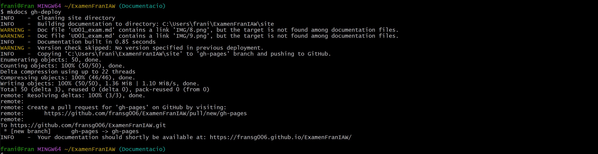

UD01 - EXAMEN IAW
Examen de la UD01 de IAW
En aquesta prova pràctica s'avaluarà la teua destresa sobre els continguts de la Unitat 01 del mòdul d'Implantació d'Aplicacions Web.
La pràctica consisteix a crear una pàgina web de documentació utilitzant Markdown, MkDocs i Git per a la creació, edició i publicació.
- Caldrà que crees un repositori per a fer l'examen.

- La documentació ha d'estar creada amb MkDocs, indicar les passes que has seguit i contenir els
Comandaments de Gitque hages utilitzat. He clonat el repositori d'Espe per tal de tenir el document markdown del examen.

Després he copiat manualment el document a ExamenFranIAW, al igual que el directori IMG, on es desen les imatges.
Seguidament he creat el projecte de mkdocs.

Després he inicialitzat el projecte, l'he connectat al meu repositori del GitHub i he fet el push.

I es pot llistar el contingut d'ell.

-
Incorpora els
Comandaments de Gita la branca principal del teu repositori a partir repositori https://github.com/espemm/UD01_exam_IAW.git -
La documentació haurà de crear-se en una branca del vostre propi repositori destinada a d'això, i en acabar, publicar-la a Github Pages.
He creat una branca anomenada Documentació, on crearé els documents que es demanen al seguent punt.

Ara mateix, després d'haver creat la branca Documentacio, haver-me situat en ella amb el comandament git checkout Documentació, haver fet els comandaments git add ., git commit -m "Text" i git push origin Documentacio, ja podem veure les rames com a la seguent imatge.

Per a fer el desplegament a GitHub Pages, he usat el comandament mkdocs gh-deploy , per tal de poder veure el resultat.

Desplegat es pot veure així

-
La documentació inclourà:
-
Pàgina d'inici amb el teu nom, curs, data i llista amb els enllaços a la resta de documents.
Aquest enllaç t'envia al document: Enllaç
-
Pàgina de comandes: Pàgina amb totes les comandes de git.
Aquest enllaç t'envia al document: Enllaç
-
Documentació del procés: clonació i creació del repositori, creació i gestió de rames, creació, gestió i publicació del projecte mkdocs.
Es troba a aquest mateix document.
-
S'avaluarà el desenvolupament detallat i degudament versionat, la presentació i l'organització de la informació.
- S'avaluarà l'ús dels elements bàsics i avançats de Markdown, així com la correcta estructuració del document. Hauràs d'incloure taules, llistes, enllaços, imatges i codi dins de la documentació del procés.
- Lliura el pdf generat a partir de la documentació del procés.
- Lliura l'enllaç al repositori del teu examen, on es puguen vore 3 branques: la branca principal amb l'enunciat clonat, altra amb la documentació i la branca de Pages.
- Lliurament de l'enllaç a la pàgina de Github Pages generada.
Les comandes de git les tens disponibles en la taula de baix.
Comandes de Git
Crear i clonar repositoris
| Comanda | Descripció |
|---|---|
git init |
Inicialitza un repositori local de Git |
git clone ssh://git@github.com/[nom-usuari]/[nom-repo].git |
Crea una còpia local d'un repositori remot |
Comandes bàsiques
| Comanda | Descripció |
|---|---|
git status |
Comprova l'estat actual |
git add [nom-arxiu.txt] |
Afegeix un fitxer a la zona de pujar canvis |
git add -A |
Afegeix tots els fitxers del repositori a la zona de pujar canvis |
git commit -m "[missatge]" |
Crea un missatge explicatiu dels canvis |
git rm -r [nom-arxiu.txt] |
Elimina un fitxer (o carpeta) |
Branques i fusions
| Comanda | Descripció |
|---|---|
git branch |
Mostra una llista de les branques que hi ha (l'asterisc assenyala la branca activa) |
git branch -a |
Mostra una llista de totes les branques (locals i remotes) |
git branch [nom] |
Crea una nova branca |
git branch -d [nom] |
Elimina una branca local |
git push origin --delete [nom] |
Elimina una branca remota |
git checkout -b [nom] |
Crea una nova branca i ens posicionem |
git checkout -b [nom] origin/[nom] |
Clona una branca remota i ens posicionem ahí |
git branch -m [nom-antic] [nom-nou] |
Renomena una branca local |
git checkout [nom-branca] |
Canvia a una branca concreta |
git checkout - |
Canvia a la última branca activa |
git checkout -- [nom-arxiu] |
Descarta canvis en un fitxer |
git merge [nom-branca] |
Combina una branca amb la branca activa |
git merge [nom-branca-origen] [nom-branca-desti] |
Combina una branca (branca-origen) amb una branca nova (branca-desti) |
git stash |
Reverteix els darrers canvis i errors en el directori actual |
git stash clear |
Reverteix tots els canvis en el directori actual |
Compartir i actualitzar projectes
| Comanda | Descripció |
|---|---|
git push origin [nom-branca] |
Envia una branca local al repositori remot |
git push -u origin [nom-branca] |
Envia canvis al repositori remot (i et posiciona a la branca concreta) |
git push |
Envia canvis al repositori remot (en la branca actual) |
git push origin --delete [nom-branca] |
Elimina una branca remota |
git pull |
Actualitza el repositori local a l'últim commit fet |
git pull origin [nom-branca] |
Porta / agafa tots els canvis d'un dipòsit remot |
git remote add origin ssh://git@github.com/[nom-usuari]/[nom-repo].git |
Afegeix canvis a un repositori remot |
git remote set-url origin ssh://git@github.com/[nom-usuari]/[nom-repo].git |
Ubica la branca remota d'un repositori remot mitjançant SSH |
Inspeccionar i comparar
| Comanda | Descripció |
|---|---|
git log |
Visualitza els canvis |
git log --summary |
Visualitza els canvis (en detall) |
git log --oneline |
Visualitza els canvis (resumit) |
git diff [branca-origen] [branca-desti] |
Vista prèvia dels canvis abans de fer un merge |